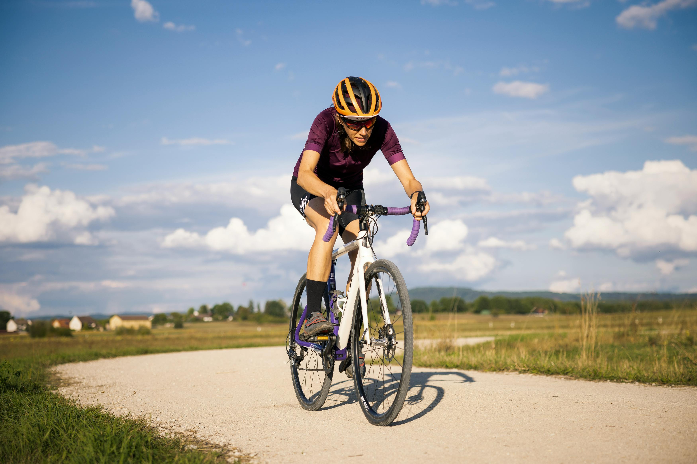

How to Prepare for Your First Gravel Ride
You've seen the photos. Riders grinning through dust clouds on sun-baked gravel roads, mountains stacked behind them, not a single car in sight. Something about gravel cycling looks different from road riding — looser, more adventurous, more fun. And you're ready to try it.
The good news: gravel riding is one of the most welcoming corners of cycling. There's no wrong bike, no strict dress code, and the culture is built around exploration rather than competition. The even better news: with a little preparation, your first gravel event can be one of the best days you've ever had on two wheels. Here's how to make it happen.
Get Your Tires Right (Seriously, This Matters Most)
If there's one thing that separates a great gravel day from a miserable one, it's tire setup. On pavement, you can get away with pumping your tires rock-hard and letting the smooth surface do the work. On gravel, that approach will rattle your fillings loose and wash out your front wheel on the first fast corner.
For most riders on 38-42mm tires, aim for 30-40 PSI. If you're running wider rubber (42mm and up), you can drop as low as 25-30 PSI. The rear tire typically runs 2-3 PSI higher than the front for stability under pedaling, while the front benefits from slightly lower pressure for better grip in corners and over loose surfaces.
If you can, go tubeless. It allows you to run lower pressures without the risk of pinch flats, and the sealant inside handles small punctures while you ride. If you're still on tubes, carry at least two spares — gravel is harder on rubber than road.
Build Your Fitness Foundation
Gravel riding demands endurance, not speed. If you're coming from road cycling, you'll find that gravel asks for a different kind of fitness — the ability to maintain steady effort over varied terrain for hours, often at lower speeds than you're used to.
Start building your base three to six months before your event. The foundation is long rides at conversational pace — the kind where you can speak in full sentences without gasping. Aim for at least one longer ride per week that challenges your endurance, keeping intensity at around 60-70% of your maximum heart rate.
Just as important: practice on actual gravel. Your body needs to learn how to absorb the micro-vibrations, and your bike handling needs to adjust to surfaces that shift under your wheels. If there's no gravel near you, seek out packed dirt trails, fire roads, or even rain-soaked grass — anything that forces you to loosen your grip and trust the bike.
Pack Smart, Not Heavy
Gravel rides take you further from help than road rides, so your saddlebag matters more. Here's what should be in it: a multi-tool with the right Allen and Torx sizes for your bike, two CO2 canisters with an inflator (or a small hand pump), two spare tubes, tire levers, and if you're tubeless, a plug kit with extra sealant. That's it. Resist the temptation to overpack — every extra ounce adds up over 50 miles of climbing.
For clothing, dress in layers. High desert mornings can start in the 40s and finish in the 80s by afternoon. A lightweight vest or arm warmers that pack small are worth their weight in gold. Sunscreen and lip balm are non-negotiable at elevation.
Fuel Early, Fuel Often
The single biggest nutrition mistake in gravel riding is waiting too long to eat. By the time you feel hungry, you're already behind — and catching up on calories while grinding up a gravel climb is much harder than it sounds.
Start eating within the first 30-45 minutes and keep fueling every 45-60 minutes after that. Aim for 60-90 grams of carbohydrates per hour — that's roughly one energy gel plus a handful of something solid every 45 minutes. Hydration drives everything: target 500-1,000 ml of fluid per hour, mixing between water and an electrolyte drink so you can adjust energy and hydration independently based on heat and effort.
The golden rule: practice your nutrition plan on training rides. Race day is not the time to discover that a certain energy gel makes your stomach revolt at mile 35.
Pace Like a Veteran
The number one mistake first-time gravel riders make isn't mechanical or nutritional — it's going out too hard in the first 10 miles. The adrenaline of the start line is real, and the temptation to hang with faster groups is strong. Resist it.
The riders who have the best experiences — and the best finishes — are the ones who start conservatively. Your first half should feel almost too easy. If you're breathing comfortably and thinking "I could go faster," you're doing it right. The gravel has a way of taking everything you've saved and spending it in the second half, on that climb you didn't see coming or that headwind that materialized out of nowhere.
Break the ride into segments rather than thinking about the total distance. Focus on making it to the next aid station, the next landmark, the next turn. The miles take care of themselves.
Embrace the Mindset
Here's the thing about gravel that road cycling doesn't prepare you for: things will go sideways, and that's actually the point. You'll hit a stretch of loose sand that kills your momentum. You'll take a wrong turn and add two miles. You'll bonk, or get a flat, or discover that the "gentle rolling hills" on the course description are actually 12% grades covered in loose rock.
Gravel teaches you to roll with it — to fix the flat, eat the gel, and keep pedaling. The community you'll find at gravel events reflects this philosophy. People stop to help strangers with mechanicals. Riders at the back of the pack get the same cheers at the finish as the riders at the front. The culture isn't about winning. It's about finishing with a story worth telling.
Your Pre-Ride Checklist
The week before your first event, run through this list: tires inspected and at the right pressure, sealant topped off if tubeless, chain lubed, brakes checked, saddlebag packed, nutrition and hydration plan tested, clothing ready for variable weather, bike computer charged, and emergency contact info in your jersey pocket. Lay everything out the night before. Trust your preparation. And get some sleep — gravel starts are usually early.
Your first gravel ride won't be perfect. It'll be better than that. It'll be the ride that changes what cycling means to you.
Ready for Your First Gravel Adventure?
The Oregon Tour de Outback offers five distances from 20 to 100 miles — perfect for riders of every level. Join us June 27, 2026 in Lakeview, Oregon.
Register Now